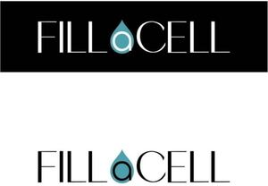

Trade Mark Journal No.2025/021 23 May 2025
WO0000001852593 (5)
Office of origin: Lithuania
Date of International Registration:12 March 2025
Date of designation in the UK:
12 March 2025

The mark contains the colours black, white and blue.
International priority date claimed: 28 January 2025
(Lithuania)
- Class 5
- Brewer's yeast dietary supplements; albumin dietary supplements; alginate dietary supplements; acai powder dietary supplements; antibacterial handwashes; antibacterial soap; antioxidant pills; antiparasitic preparations; appetite suppressants for medical purposes; plant extracts, other than essential oils, for pharmaceutical purposes; protein dietary supplements; protein supplements for animals; royal jelly dietary supplements; propolis dietary supplements; enzyme dietary supplements; glucose dietary supplements; medicinal oils, other than essential oils; medicated animal feed; medicated hair lotions; therapeutic preparations for the bath; medicated toothpaste; medicinal tea; medicinal infusions; medicinal roots; dietary supplements for animals; haematogen; herbicides; sanitary towels; sanitary tampons; sanitary pads; menstruation knickers; sanitary napkins; absorbent cotton; insecticides; personal sexual lubricants; whey protein dietary supplements; seawater for medicinal bathing; casein dietary supplements; cedar wood for use as an insect repellent; dietary supplements with a cosmetic effect; deodorizers for litter trays; starch for dietetic or pharmaceutical purposes; wheat germ dietary supplements; food for babies; lecithin dietary supplements; slimming pills; adhesive plasters; dietary fibre; massage candles for therapeutic purposes; honey-based ointment for medical purposes; medicated soap; melissa water for pharmaceutical purposes; menthol; yeast dietary supplements; almond oil for medical purposes; nutritive substances for microorganisms; flour for pharmaceutical purposes; mineral dietary supplements; mineral water salts; salts for mineral water baths; nutritional supplements; mint for pharmaceutical purposes; sodium salts for medical purposes; nicotine patches for use as aids to stop smoking; decoctions for pharmaceutical purposes; pharmaceutical preparations for skin care; jujube, medicated; preparations for destroying vermin; pastilles for pharmaceutical purposes; pectin for pharmaceutical purposes; pepsins for pharmaceutical purposes; peptones for pharmaceutical purposes; milk sugar for pharmaceutical purposes; milk ferments for pharmaceutical purposes; sticking plasters; remedies for foot perspiration; parasiticides; remedies for perspiration; mud for baths; rhubarb roots for pharmaceutical purposes; castor oil for medical purposes; greases for medical purposes; acids for pharmaceutical purposes; liquorice for pharmaceutical purposes; stick liquorice for pharmaceutical purposes; malt for pharmaceutical purposes; syrups for pharmaceutical purposes; fumigating sticks; linseed oil dietary supplements; linseed meal for pharmaceutical purposes; sunburn ointments; thermal water; solvents for removing adhesive plasters; poultices; medicinal herbs; vitamin supplement patches; vitamin preparations; bath tea for therapeutic purposes; tanning pills; caustics for pharmaceutical purposes; gelatine for medical purposes; pollen dietary supplements; dietary supplements for human beings; herbal teas for medicinal purposes; herbal extracts, other than essential oils, for medical purposes; cod liver oil.
VIRGINIJA DŽERVIENĖ
Representative: Telesforas Urbaitis, Advokatas Telesforas Urbaitis,, Gedimino pr. 28/2-801, LT-01104 Vilnius, LITHUANIA